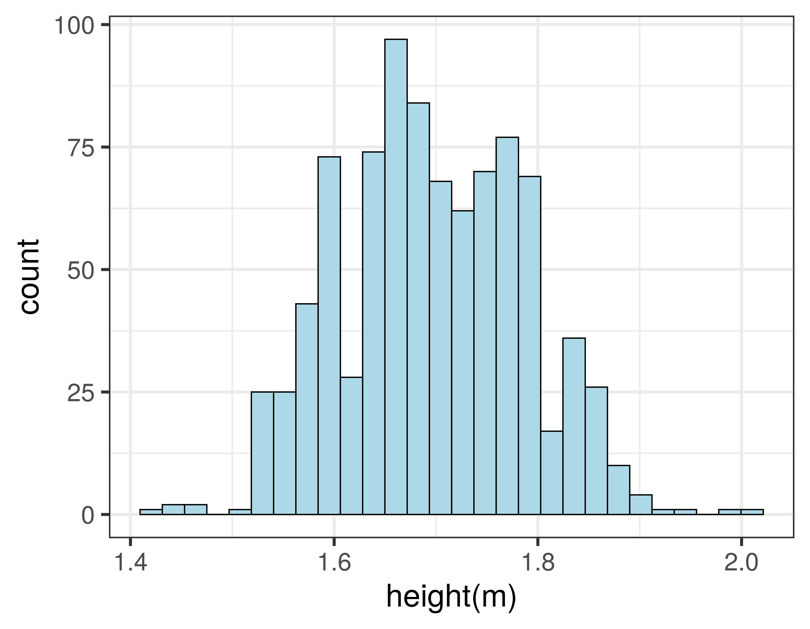

Data types and descriptive statistics
BIOL40102: Research Methods and Bioethics
Dr Axel Barlow
email: axel.barlow@ntu.ac.uk
In this lecture...
- Why stats are important?
- Variables
- Visualising a categorical variable
- Visualising a continuous variable
- Measures of central tendency
- Measures of dispersion
Why stats are important?
Analyse data to answer questions

Statistics as a tool for communication
France seeing exponential rise...
Flattening the Coronavirus curve...
R number is now between 1.1 and 1.4...
Bioinformatics and data science
- Biology + informatics
- Computational analysis of biological data
- A key part of modern biological research
- Links biology, computer science, mathematics and statistics
- Part of the emerging field of data science

Harvard Business Review
Learn coding and programming, e.g. R
- Programming language
- Executed through the command line
- Or
Rstudioenvironment - Vast range of analyses
- High quality graphs and diagrams

CC-BY-SA 4.0

PAC2, AGPL
Variables
A variable is something that can be measured or counted
There are three main types:
Categorical variables
Ordinal variables
Quantitative variables
- Continuous
- Discrete
The type of variable determines how data should be analysed and visualised
Categorical variables
[Can be referred to as qualitative or nominal variables]
- Things that have distinct categories
- Qualitative (assigned or named, not quantified)
- A fixed (or limited) number of possibilities
- Categories cannot be divided or multiplied
- Examples:
- Presence/absence of anything
- DNA nucleotides
- telephone numbers
Ordinal variables
[Can be referred to as ranked variables]
- Things that can be ranked
- Categories that can be put in a sequence
- Qualitative (assigned or named, not quantified)
- A fixed (or limited) number of possibilities
- Categories cannot be divided or multiplied
- But we can identify a central (median) value
- Examples:
- Often used in questionnaires, e.g. dislike, indifferent, like
- Degrees: BSc, MSc, PhD
Quantitative variables
[Can be referred to as numeric, interval or ratio variables]
- Things that can be measured numerically
- Typically have units
- Values can be divided or multiplied
- Continuous
- An infinite number of possibilities
- Accuracy only limited by the experimental method
- Temperature, distance, speed, time
- Discrete
- Numerical measurements where only certain values are possible
- Counts, e.g. number of patients, molecules, etc.
Visualising a categorical variable
Visualising a categorical variable
- We can visualise a single categorical or ordinal variable using a barchart.
- Categories go on the x axis and the counts go on the y axis.

Barchart example
- Human mitochondrial DNA; 4 nucleotides (A,C,G,T); 16,568 bp
## V1
## 1 GATCACAGGTCTATCACCCTATTAACCACTCACGGGAGCTCTCCATGCATTTGGTATTTTCGTCTGGGGG
## 2 GTGTGCACGCGATAGCATTGCGAGACGCTGGAGCCGGAGCACCCTATGTCGCAGTATCTGTCTTTGATTC
## 3 CTGCCCCATCCCATTATTTATCGCACCTACGTTCAATATTACAGGCGAACATACTTACTAAAGTGTGTTA
## 4 ATTAATTAATGCTTGTAGGACATAATAATAACAATTGAATGTCTGCACAGCCGCTTTCCACACAGACATC
## 5 ATAACAAAAAATTTCCACCAAACCCCCCCTCCCCCGCTTCTGGCCACAGCACTTAAACACATCTCTGCCA
## 6 AACCCCAAAAACAAAGAACCCTAACACCAGCCTAACCAGATTTCAAATTTTATCTTTTGGCGGTATGCAC
## 7 TTTTAACAGTCACCCCCCAACTAACACATTATTTTCCCCTCCCACTCCCATACTACTAATCTCATCAATA
## 8 CAACCCCCGCCCATCCTACCCAGCACACACACACCGCTGCTAACCCCATACCCCGAACCAACCAAACCCC
## 9 AAAGACACCCCCCACAGTTTATGTAGCTTACCTCCTCAAAGCAATACACTGAAAATGTTTAGACGGGCTC
## 10 ACATCACCCCATAAACAAATAGGTTTGGTCCTAGCCTTTCTATTAGCTCTTAGTAAGATTACACATGCAA
## 11 GCATCCCCGTTCCAGTGAGTTCACCCTCTAAATCACCACGATCAAAAGGGACAAGCATCAAGCACGCAGC
## 12 AATGCAGCTCAAAACGCTTAGCCTAGCCACACCCCCACGGGAAACAGCAGTGATTAACCTTTAGCAATAA
## 13 ACGAAAGTTTAACTAAGCTATACTAACCCCAGGGTTGGTCAATTTCGTGCCAGCCACCGCGGTCACACGA
Barchart example
- Human mitochondrial DNA; 4 nucleotides (A,C,G,T); 16,568 bp

Visualising a continuous variable
Histograms
- We can visualise a single quantitative variable (continuous or discrete) using a histogram
- First we need to bin our data: sort into non-overlapping intervals of equal size
- The bins go on the x axis and the counts go on the y axis.
Histogram example
- Heights of 898 people, in metres
## height
## 1 1.86
## 2 1.76
## 3 1.75
## 4 1.75
## 5 1.87
## 6 1.84
## 7 1.66
## 8 1.66
## 9 1.80
## 10 1.73
## 11 1.79
## 12 1.74
## 13 1.70
- Binned data
## start finish counts
## 1 1.40 1.45 3
## 2 1.45 1.50 3
## 3 1.50 1.55 44
## 4 1.55 1.60 122
## 5 1.60 1.65 163
## 6 1.65 1.70 171
## 7 1.70 1.75 149
## 8 1.75 1.80 146
## 9 1.80 1.85 76
## 10 1.85 1.90 13
## 11 1.90 1.95 6
## 12 1.95 2.00 1
## 13 2.00 2.05 1
Histogram example
- Using 14 bins

Effect of bin size
- Using 7 bins
Effect of bin size
- Using 28 bins

Data distribution
- The shape of the histogram can be called a distribution
- Height is an example of the normal distribution
- It looks (more or less) like a symmetrical bell
- Very tall and very short people are rare, most people are around the middle
- Many other variables: birth weight, blood pressure, measurement error

Measures of central tendency
Describing distributions for quantitative variables
Measure of central tendency
- An average: it describes the central position of the distribution
- It summarises the entire distribution in a single value
- We use three types:
meanmedianmode
How are they calculated?
Mean
- Add all values together and divide by number of observations
- Good for continuous variables, discrete variables may need rounding
Median
- Arrange values from smallest to largest and pick the middle one
- Good for continuous, discrete, and ordinal variables
Mode
- The most frequently occurring value
- Good for discrete and ordinal variables
Discrete variable example
1 2 3 3 4 4 4 5 5 5 5 6 6 6 7 7 8 9 10
Mean
1+2+3+3+4+4+4+5+5+5+5+6+6+6+7+7+8+9+10 = 100
100 / 19 = 5.263158
Median
5
Mode
5
Continuous variable example
- Height of 500 women, plotted as a histogram
mean = 1.6528494 m
median = 1.6532279 m
- Mean and median are virtually identical
- A feature of the normal distribution
- So why do we need different measures?
- Not all variables are normally distributed
Ancient DNA fragment length
- DNA in ancient samples is highly fragmented
- The fragment lengths have a skewed distribution


800 year old cat (Carl Vivian, Uni Leicester)
mean = 45.8054171 bp
median = 41 bp
mode = 31 bp
Measures of dispersion
Same mean, very different distribution

Box plot
- Also know as a box and whisker plot
- Displays five summary statistics:
- Median (50th percentile)
- lower quartile (25th percentile)
- upper quartile (75th percentile)
- minimum (0th percentile)
- maximum (100th percentile)
- Plus any outliers
- Note upper - lower quartile is the interquartile range
Variance and standard deviation
Variance
- Average of the squared differences from the mean
- For all value, subtract the Mean and square the result, then calculate the average
- Always positive, large numbers indicate more dispersion
Standard deviation
- Square root of the variance
- In the same units as the data (easy to interpret!)
- For normally distributed data, 68% of observations fall within 1 SD of the mean, 95% with 2 SDs, and 99.7% within 3 SDs
Standard deviation and the normal distribution
- Mean = 15.0149312, Standard deviation = 3.0303673
Barchart using mean and standard deviation
In this lecture...
- Why stats are important?
- Variables
- Visualising a categorical variable
- Visualising a continuous variable
- Measures of central tendency
- Measures of dispersion
Next time
Hypothesis testing, probability and test of frequencies